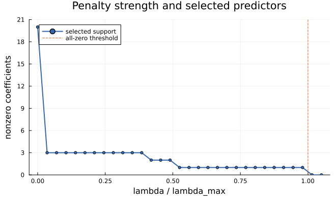

Optimality: subgradients and KKT
Prerequisites: the lasso objective and derivatives of a quadratic.
After this chapter you can:
- Derive the zero/nonzero optimality conditions.
- Compute the penalty above which the all-zero fit is optimal.
- Check a returned solution independently and plot its selected support.
The derivative at a corner
The absolute value has slopes -1 and 1 away from zero. At zero, every slope between them supports its graph from below. Its subdifferential is
\[\partial |b|=\begin{cases} \{1\},&b>0,\\ [-1,1],&b=0,\\ \{-1\},&b<0. \end{cases}\]
For a convex objective, zero in its subdifferential characterizes a minimizer. Applying this to the differentiable loss plus the separable L1 penalty gives
\[0\in sX^\mathsf{T}(X\beta-y)+\lambda\partial\|\beta\|_1.\]
Thus a nonzero coefficient must balance the loss gradient with a penalty slope of +lambda or -lambda. At a zero coefficient, the interval of allowable penalty slopes can balance any gradient between those values. These are the lasso KKT conditions; the general convex optimality argument is described in Boyd and Vandenberghe, Chapter 5.5.
Substitute beta = 0: the condition becomes maximum(abs, s * X' * y) <= lambda. Therefore lambda_max = s * maximum(abs, X' * y). The examples below use s = 1/n and no unpenalized intercept. They also show why recovering the data-generating support is a different question from solving the stated convex problem.
The lasso's L1 penalty can make some fitted coefficients exactly zero. This tutorial shows both the threshold where everything becomes zero and a more realistic problem with a few important predictors.
Start with the 3-by-2 example
The previous first example has two nonzero coefficients when lambda = 0.1. Increasing the penalty to 1.0 makes the first coefficient exactly zero:
using ProximalBase, ProximalSolvers
X = [1.0 0.0; 0.0 2.0; 0.0 0.0]
y = [2.0, -2.0, 0.5]
n = length(y)
f = (1 / n) * LeastSquaresLoss(y, X)
beta = zeros(2)
lambda = 1.0
result = solve!(beta, f, NormL1(lambda),
CDSolver(order=:cyclic, momentum=false))
@assert isapprox(beta, [0.0, -0.25]; atol=1e-7)
beta2-element Vector{Float64}:
0.0
-0.25For the normalized lasso, a vector of all zeros is optimal when
\[\lambda \geq \lambda_{\max} =\frac{1}{n}\max_j |X_j^\mathsf{T}y|.\]
This assumes the problem has no unpenalized intercept, as in these examples.
lambda_max = maximum(abs, X' * y) / n
@assert isapprox(lambda_max, 4 / 3; atol=1e-12)
all_zero_beta = zeros(2)
zero_result = solve!(all_zero_beta, f, NormL1(1.01 * lambda_max),
CDSolver(order=:cyclic, momentum=false))
@assert all(iszero, all_zero_beta)
all_zero_beta2-element Vector{Float64}:
0.0
0.0A larger reproducible problem
Now generate a dense design with 100 observations and 20 predictors. Only three coefficients in the data-generating model are nonzero. We use Xoshiro(1) so the generated data are reproducible, a deterministic coordinate order, and a penalty below lambda_max:
using Random, LinearAlgebra, ProximalBase, ProximalSolvers
rng = Xoshiro(1)
n, p = 100, 20
X = randn(rng, n, p)
true_beta = zeros(p)
true_beta[[2, 8, 15]] = [2.0, -1.5, 1.0]
y = X * true_beta + 0.2 * randn(rng, n)
lambda_max = maximum(abs, X' * y) / n
lambda = lambda_max / 4
f = (1 / n) * LeastSquaresLoss(y, X)
penalty = NormL1(lambda)
beta = zeros(p)
# Deterministic order and a tighter absolute change threshold make this
# support comparison and subsequent KKT calculation easier to reproduce.
# These settings are not a general accuracy guarantee.
solver = CDSolver(order=:cyclic, momentum=false,
relative=false, tol=1e-9)
result = solve!(beta, f, penalty, solver)
nonzeros = count(!iszero, beta)
selected_indices = findall(!iszero, beta)
true_indices = findall(!iszero, true_beta)
@assert true_indices == [2, 8, 15] && 0 < nonzeros < p
(; lambda_max, lambda, nonzeros, converged=result.converged,
true_indices, selected_indices,
correctly_selected=intersect(selected_indices, true_indices))(lambda_max = 2.8186460848309554, lambda = 0.7046615212077388, nonzeros = 3, converged = true, true_indices = [2, 8, 15], selected_indices = [2, 8, 15], correctly_selected = [2, 8, 15])The output now shows which predictors were selected and how they overlap with the true predictors [2, 8, 15], not just how many were nonzero. The selected set need not match the true set: noise, design correlations and the penalty strength can change selection.
Try three penalty levels on the same data, using the same deterministic CD settings:
penalty_counts = map((0.0, lambda, 1.01 * lambda_max)) do lambda_trial
trial_beta = zeros(p)
_ = solve!(trial_beta, f, NormL1(lambda_trial), solver)
(lambda=lambda_trial, nonzeros=count(!iszero, trial_beta))
end
@assert last(penalty_counts).nonzeros == 0
penalty_counts((lambda = 0.0, nonzeros = 20), (lambda = 0.7046615212077388, nonzeros = 3), (lambda = 2.846832545679265, nonzeros = 0))This example illustrates how increasing lambda can reduce the number of selected predictors. The final level exceeds lambda_max, where the all-zero fit is optimal. A decreasing support size at every step is not guaranteed for every lasso design.
Check optimality independently
For the normalized least-squares lasso, the smooth loss gradient is
\[\nabla f(\beta)=-X^\mathsf{T}(y-X\beta)/n.\]
The Karush–Kuhn–Tucker (KKT) condition says that for each nonzero coefficient j, the gradient must be -lambda * sign(beta[j]). For each zero coefficient, the gradient's magnitude must be no larger than lambda. The following code measures violations of those conditions:
grad = -X' * (y - X * beta) / n
kkt = [iszero(beta[j]) ?
max(abs(grad[j]) - lambda, 0) :
abs(grad[j] + lambda * sign(beta[j]))
for j in eachindex(beta)]
max_kkt = maximum(kkt)
@assert max_kkt < 1e-3
max_kkt3.2529534621517087e-14The smaller max_kkt, the closer this solution is to satisfying first-order optimality. The threshold used to judge it depends on the scale and numerical precision of your problem. For this convex lasso, the KKT conditions characterize an optimum; this check is separate from the solver's converged flag. For ElasticNet(lambda1, lambda2) (CD, PGD and APG) the penalty also has the ridge term lambda2/2 * sum(abs2, beta): for each nonzero coefficient the gradient plus lambda2 * beta[j] must be -lambda1 * sign(beta[j]), and for each zero coefficient the gradient's magnitude must be no larger than lambda1.
The solver's interpretation of a stopping flag belongs to the stopping contract, with the change test for CD specified in the scalar CD contract. The KKT calculation above uses the raw problem data and returned coefficients, independently of either flag.
What about SparseIterate?
A SparseIterate stores active coefficient coordinates and their values, rather than using an ordinary dense coefficient vector. It can be useful when the fitted coefficients have many zeros, but the design X is still dense in this development version. CD accepts it; PGD currently does not. See the SparseIterate section of the lasso tutorial and Choosing a solver.
The complete beginner workflow is Getting started; the solver's numerical limits appear in the numerical contracts.
Plot the regularization path's support
Use the same observations throughout this experiment. Changing the data and lambda at once would confound the effect of the penalty with a different sample. We start each fit at zero to keep the experiment easy to reproduce.
using Plots
lambda_grid = collect(range(0.0, 1.05 * lambda_max; length=31))
support_sizes = map(lambda_grid) do level
trial_beta = zeros(p)
solve!(trial_beta, f, NormL1(level), solver)
count(!iszero, trial_beta)
end
@assert last(support_sizes) == 0
support_plot = plot(lambda_grid ./ lambda_max, support_sizes;
marker=:circle, markersize=3, linewidth=2, color="#3366aa",
xlabel="lambda / lambda_max", ylabel="nonzero coefficients",
label="selected support", title="Penalty strength and selected predictors",
ylims=(0, p + 1), size=(660, 400))
vline!(support_plot, [1.0]; label="all-zero threshold", linestyle=:dash,
color="#d46b38")
savefig(support_plot, "lasso-support.svg")
A count alone does not tell which predictors were selected. Compare selected_indices with true_indices, and evaluate predictions on new data when prediction is the scientific goal. Support size need not decrease at every step for an arbitrary correlated design, even though the endpoint beyond lambda_max is known exactly from the KKT conditions.
Exercises
- Derive
lambda_maxwhen the loss iss/2 * sum(abs2, y-X*beta)rather than the normalized loss. - A candidate has
beta[j] = 0and gradient1.2 * lambdaat that coordinate. Is it optimal? Which direction locally decreases the objective? - Coding: alter the fitted
beta[2]by0.2and recompute the independent KKT residual. Compare it with the unaltered solution and with a freshsolve!call from the altered starting point. - Coding: repeat the support plot with more observation noise. Report both the selected indices and held-out prediction error, rather than just a count.
Exercise answers
- The threshold is
s * maximum(abs, X' * y)for this no-intercept model. - The zero-coordinate condition fails. A small negative change reduces the loss by about
1.2 * lambdaper unit and adds onlylambdain penalty. - The altered point will generally have a larger KKT residual. A warm-started solver can return to an accurate minimizer; check the resulting residual. The old
resultdescribes the old solve and must not validate a modified vector. - Exact indices and prediction errors depend on the generated sample. More noise can change both selection and the useful penalty; numerical optimality alone cannot identify the statistically best model.
Continue to the proximal operator.